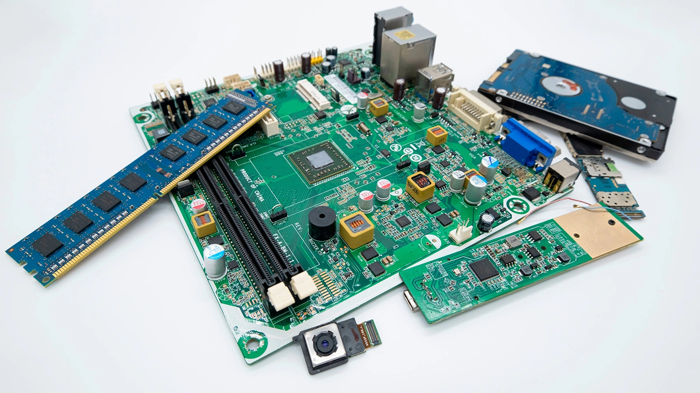
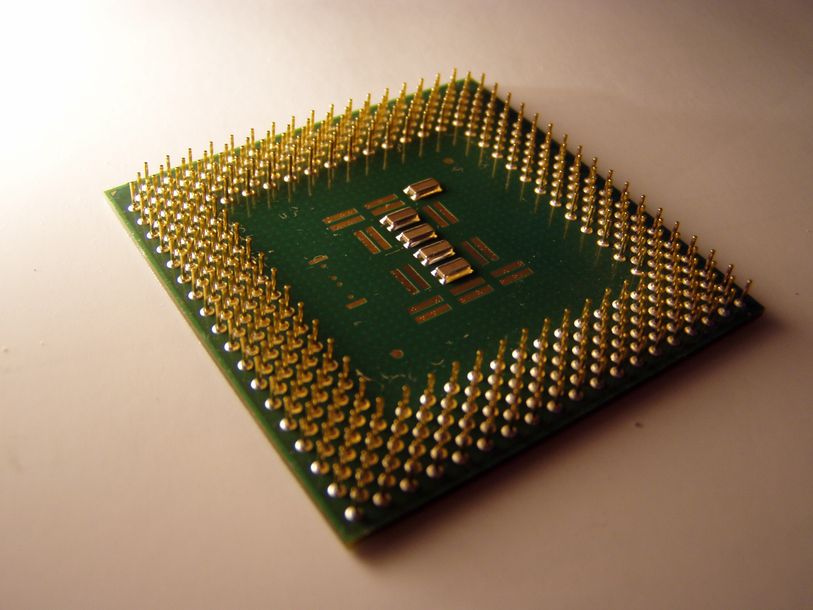
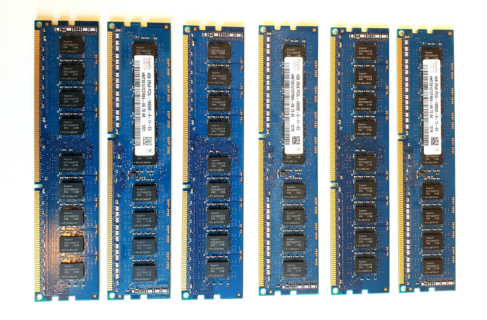
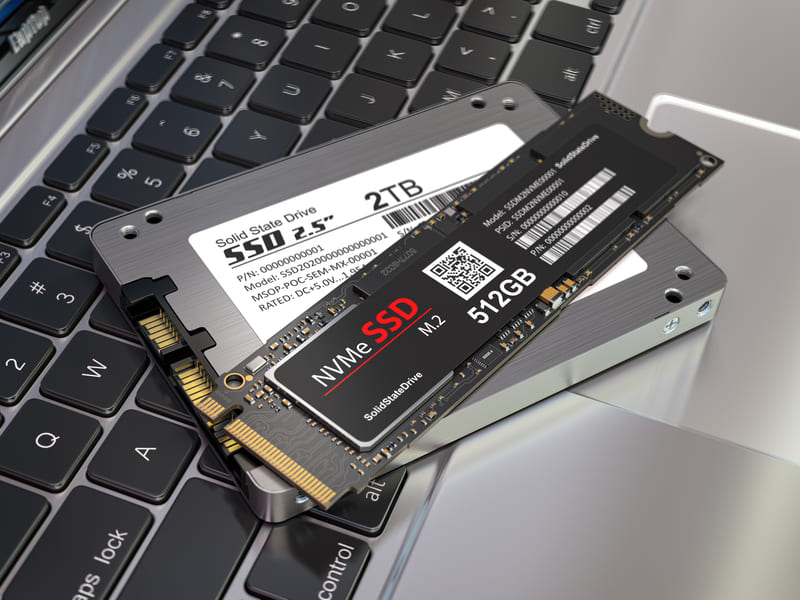
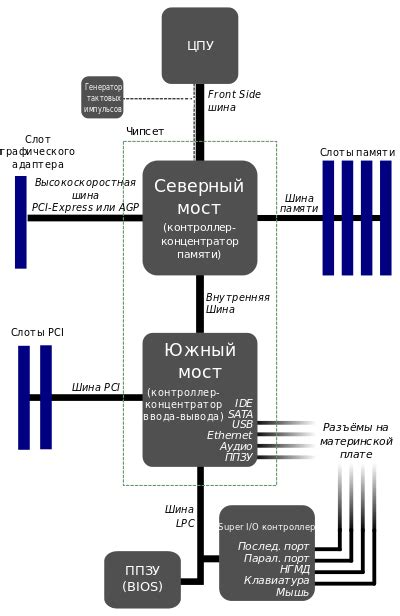
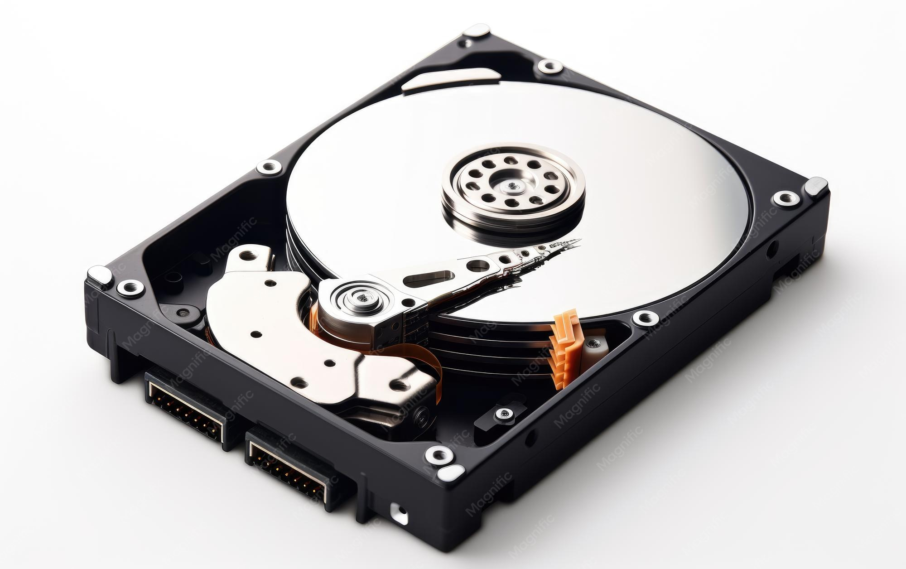
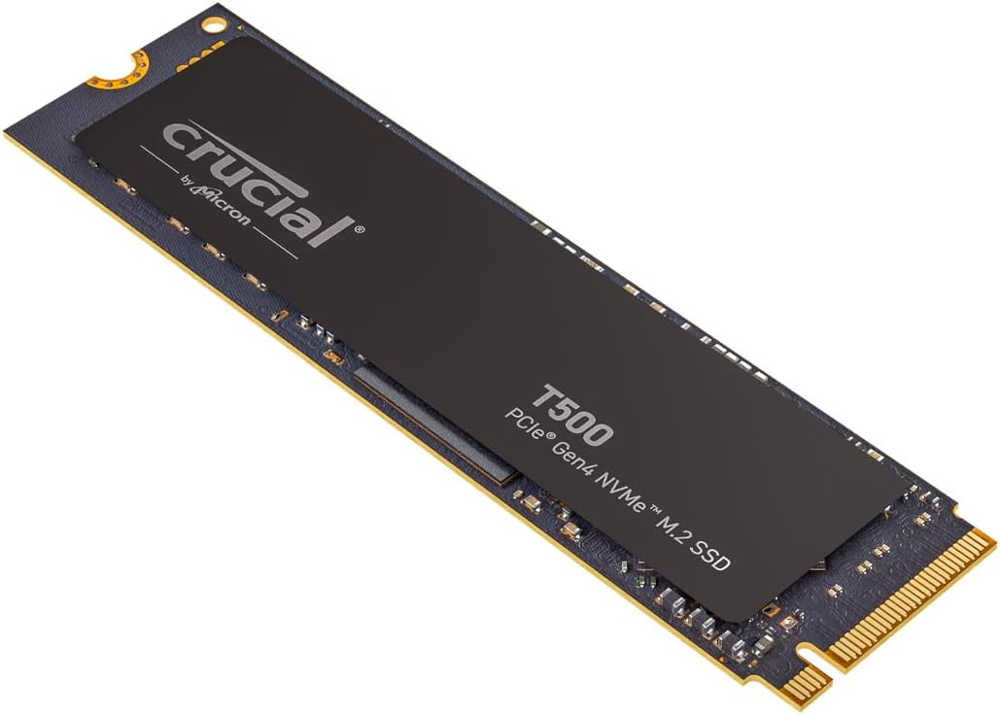
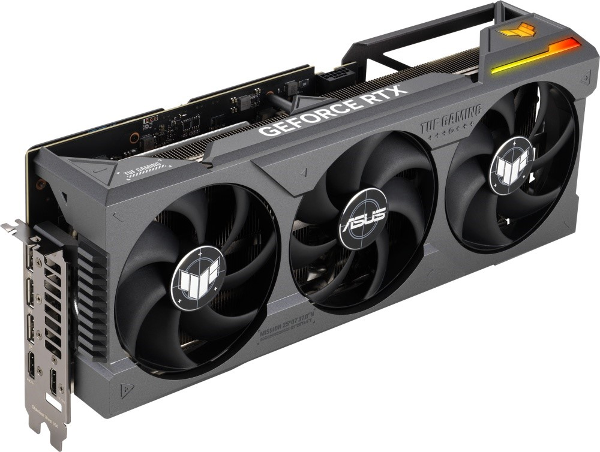
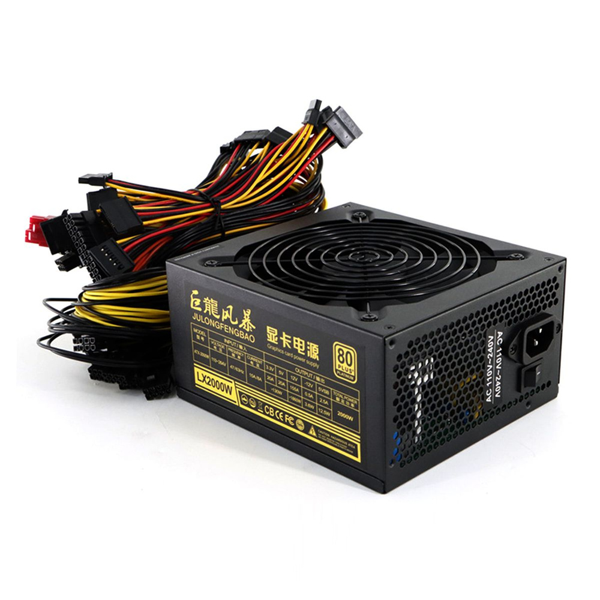
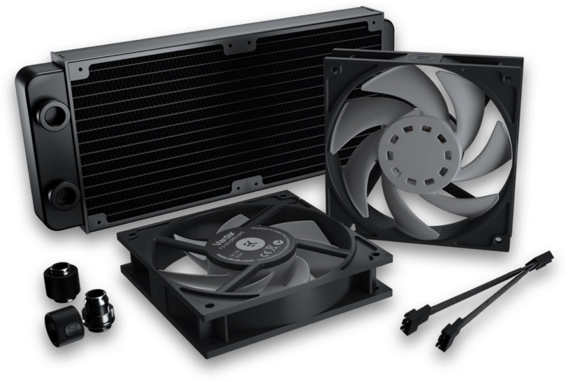

1
Ввод
Компьютер получает информацию от пользователя или другого устройства.
Что находится внутри компьютера? Как процессор взаимодействует с памятью? Где хранятся файлы и каким образом компьютер получает и выводит информацию?
Начать изучение ↓Компьютер не является одним устройством. Это система взаимосвязанных компонентов, которые совместно выполняют программы и работают с информацией.
Мы уже знаем, что компьютер может вводить, обрабатывать, хранить и выводить информацию.
Теперь разберёмся, какие устройства обеспечивают выполнение этих процессов и как они взаимодействуют между собой.
Любая работа компьютера связана с несколькими основными действиями.
Компьютер получает информацию от пользователя или другого устройства.
Полученные данные обрабатываются в соответствии с командами программы.
Информация может временно или постоянно сохраняться в памяти компьютера.
Результат обработки передаётся человеку или другому устройству.
Все физические части компьютера, которые можно увидеть или потрогать, относятся к аппаратному обеспечению (hardware).
Процессор, оперативная память, накопитель, материнская плата, клавиатура и монитор — всё это аппаратные компоненты.
Рассмотрим основные компоненты, без которых работа современного компьютера была бы невозможна.

Главная печатная плата компьютера, которая соединяет основные компоненты в единую систему.

Процессор выполняет команды программ и обрабатывает данные.

Оперативная память хранит данные и команды, которые необходимы компьютеру прямо сейчас.

Накопитель предназначен для постоянного хранения операционной системы, программ, документов, фотографий и других файлов.
Отдельные компоненты должны не просто находиться внутри корпуса — они должны обмениваться данными.

Материнская плата объединяет основные компоненты компьютера.
Материнская плата сама по себе не выполняет всю работу компьютера. Её важнейшая задача — объединить компоненты и обеспечить их взаимодействие.
Процессор можно представить как компонент, который последовательно выполняет команды программы и выполняет необходимые вычисления.
Процессор работает с определённым тактовым сигналом. Частота измеряется в герцах, а современные процессоры обычно имеют частоты порядка нескольких гигагерц.
Однако производительность процессора определяется не только частотой. Важны также архитектура, количество ядер, организация вычислений и другие характеристики.
Современный процессор может содержать несколько вычислительных ядер. Это позволяет выполнять несколько потоков работы параллельно и эффективнее обрабатывать различные задачи.
Во время работы компьютеру постоянно нужны данные и команды. Их временно хранит оперативная память.
Сегодня наиболее распространены два типа накопителей — жёсткие диски HDD и твердотельные накопители SSD.

Использует вращающиеся магнитные диски и механический механизм чтения и записи. HDD позволяют хранить большие объёмы данных и обычно стоят дешевле в пересчёте на единицу объёма.

Использует микросхемы флеш-памяти и не имеет движущихся механических частей. SSD обычно обеспечивают быстрый доступ к данным и хорошо подходят для современной компьютерной техники.
Для взаимодействия с человеком компьютеру нужны устройства ввода и вывода.
С их помощью информация поступает в компьютер в форме, которую он может обрабатывать.
С их помощью результат обработки становится доступен человеку.
Когда человек говорит в микрофон, звук поступает в компьютер — это ввод. Когда компьютер воспроизводит звук через колонки — это вывод.
Для формирования изображения компьютер использует графическую подсистему.

Графический процессор (GPU) предназначен для выполнения большого количества операций, связанных с обработкой графики.
Графическая подсистема формирует данные изображения, после чего они передаются на монитор или другое устройство отображения.
Компьютерным компонентам нужна энергия, а во время работы они выделяют тепло.

Блок питания преобразует электрическую энергию из сети в необходимые для компонентов напряжения и обеспечивает их питанием.

Во время работы процессор, видеокарта и другие компоненты выделяют тепло. Система охлаждения помогает поддерживать подходящий температурный режим.
Перегрев может привести к снижению производительности, нестабильной работе и повреждению компонентов. Поэтому нормальная температура — важное условие стабильной работы компьютера.
Компоненты компьютера могут находиться внутри корпуса или подключаться к нему снаружи.
Находятся внутри корпуса компьютера и непосредственно участвуют в его работе.
Подключаются к компьютеру снаружи и расширяют его возможности.
Периферийными называют дополнительные устройства, подключаемые к компьютеру для ввода, вывода, хранения или передачи информации.
Даже самый мощный компьютер бесполезен без программ, которые задают ему последовательность действий.
Программа представляет собой последовательность команд, которые компьютер должен выполнить. Операционная система управляет ресурсами компьютера и обеспечивает взаимодействие программ с аппаратными компонентами.
Рассмотрим простой пример: пользователь вводит информацию, компьютер её обрабатывает, а затем показывает результат.
Пользователь вводит информацию с помощью клавиатуры, мыши, микрофона или другого устройства.
Данные поступают в компьютер и размещаются в памяти, необходимой для текущей работы.
Процессор выполняет команды программы и обрабатывает полученные данные.
После обработки компьютер получает новый результат.
Результат отображается на мониторе, воспроизводится через колонки или передаётся другому устройству.
Если результат нужно сохранить, он записывается на долговременный накопитель.
А память и накопители позволяют компьютеру временно или постоянно хранить необходимые данные. Все компоненты работают не отдельно, а как единая система.
Теперь попробуем собрать всё изученное в единую картину.
Не следует воспринимать компьютер как набор независимых деталей.
Процессор, память, накопители, устройства ввода и вывода, видеосистема и другие компоненты постоянно взаимодействуют между собой.
Именно совместная работа аппаратного и программного обеспечения позволяет компьютеру выполнять задачи пользователя.
Ответы можно дать устно или записать в тетрадь. Постарайся объяснять своими словами.